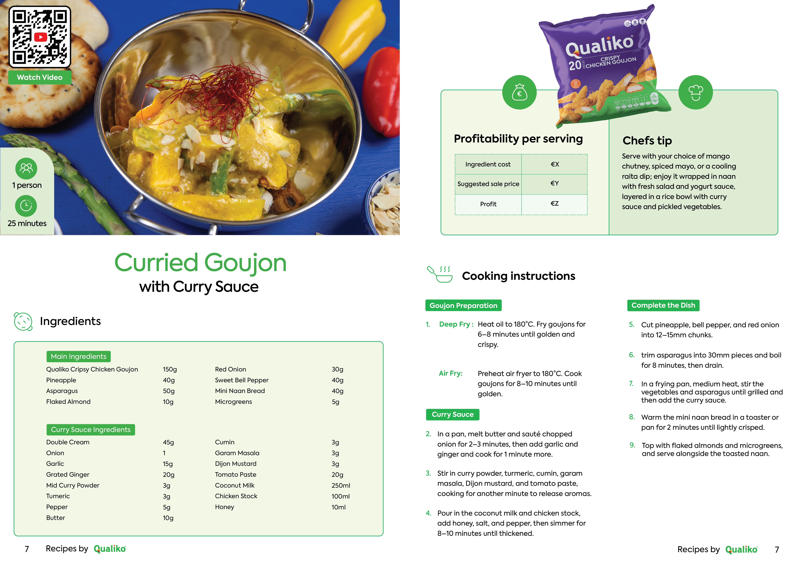

Role
Graphic designer
Timeline
4 weeks
Tools
Adobe Illustrator, Photoshop
Type
Internship project
Designed an entire cookbook for Qualiko, displaying their recipes

Graphic designer
4 weeks
Adobe Illustrator, Photoshop
Internship project
During my internship, I was tasked with designing a complete cookbook for Qualiko using the company's existing chicken recipes. Rather than simply laying out text and images, the goal was to create a publication that reflected the Qualiko brand while providing an enjoyable and easy-to-follow reading experience.
One of the biggest challenges was designing a consistent layout that worked for every recipe. Each spread needed to accommodate a large food photograph alongside ingredients and preparation steps without feeling cluttered. Since every recipe varied in length and image composition, maintaining visual consistency throughout the book required careful planning and attention to detail.
Beyond the recipe pages, I was also responsible for designing the complete publication, including the cover, introduction, chapter dividers, and supporting pages. Every element needed to work together as a cohesive brand experience.
I approached the project by first establishing a clear layout system that could be reused throughout the cookbook. This allowed every recipe to follow the same visual structure while remaining flexible enough to accommodate different amounts of content.
The design was built around high-quality food photography, with typography and spacing carefully balanced to ensure recipes remained easy to read. By creating a strong visual hierarchy, readers could quickly distinguish ingredients, preparation steps, cooking times, and additional information.

Example recipe page
To maintain consistency with the Qualiko brand, I incorporated the company's existing colors, typography, and visual language throughout the publication. I also designed the cover and introductory pages to create a polished first impression and give the cookbook a professional, premium appearance from beginning to end.
The project started with analyzing Qualiko's brand guidelines and reviewing the collection of recipes to identify a layout that could be applied consistently across the entire book. I experimented with several grid systems and page compositions before selecting a design that balanced photography with written content.
Throughout the design process, I continuously refined the layout by testing different image placements, typography scales, and spacing. Particular attention was given to the two-page recipe spreads, ensuring that each spread felt balanced regardless of the amount of text or the orientation of the accompanying image.
Regular feedback sessions with the client helped fine-tune both the visual style and the usability of the cookbook. Through multiple iterations, I developed a cohesive publication that combined strong editorial design with clear information hierarchy, resulting in a cookbook that was both visually engaging and practical to use.

Meet the chef page